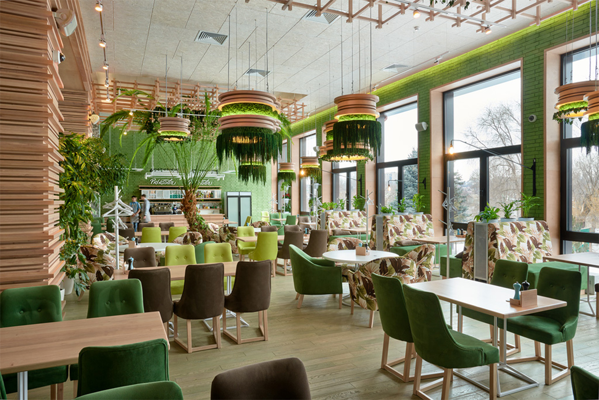

Bazilik
Ресторан італійської кухні
Про нас
"Bazilik" — це італійський ресторан, що поєднує вишукану атмосферу, сучасний інтер'єр та справжні кулінарні шедеври. Ми пропонуємо вам неповторний досвід італійської кухні, створений з любов'ю до традицій.

Наше меню
Насолоджуйтесь різноманітністю страв: від класичних піц і паст до авторських десертів та вишуканих вин. Кожен інгредієнт ретельно підібраний, щоб дарувати вам справжнє задоволення від смаку.
Bazilik
Забронюйте стіл
Ми раді вітати вас у нашому ресторані! Забронюйте столик заздалегідь, щоб насолодитися атмосферою "Bazilik" у будь-який зручний для вас час.